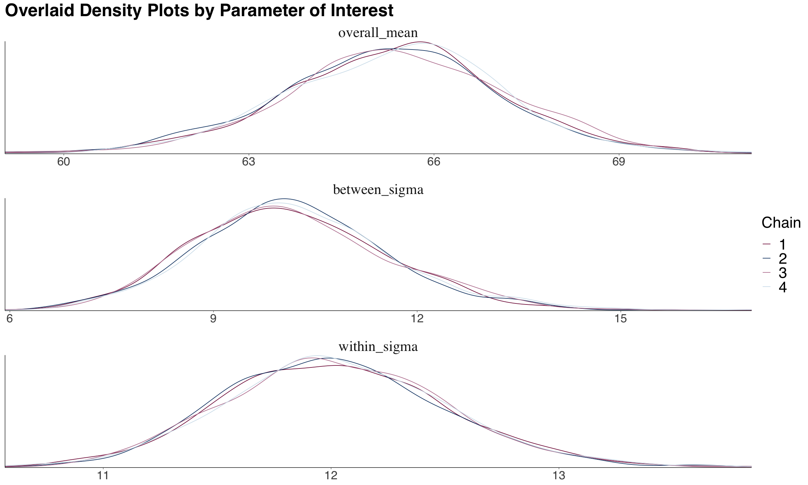
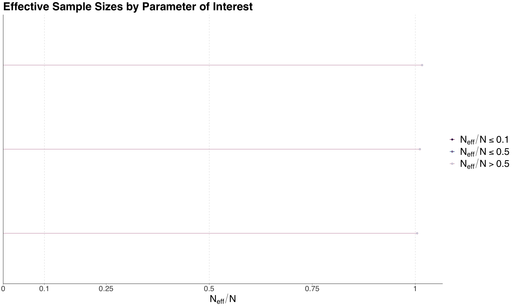
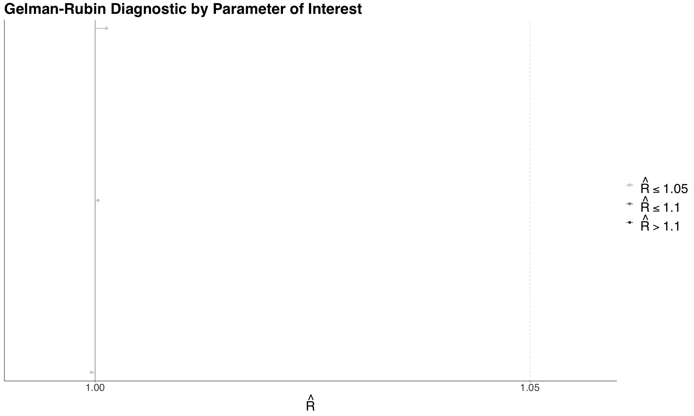

Statistical Inference II
Review of Frquentist Statistical Inference
Recall DSCI 552: Statistical Interference I and Distribution Cheatsheet
- Use Observed Data (from random sample) to make Inferences about Population Parameters
- e.g. \(\mu\), \(\sigma^2\), median, etc.
- Find Point Estimates and Confidence Intervals for these parameters.
- Latent Population vs. Observable Variables
- Latent Population is the population that we are interested in, but we can’t observe it directly.
- Observable Variables are the variables that we can observe directly.
- e.g. Online ad click data to estimate the total lifetime revenue.
Introduction to Bayesian Statistics
- Very flexible
- Can handle: missing data, complex models, non-iid, etc.
- Valid inference for any (finite) amount of data
- The population parameters are treated as random variables
- Easy to interpret uncertainty of the population parameters
\[\text{Posterier} \propto \text{Likelihood} \times \text{Prior}\]
- Prior: What we know about the parameter before we see the data (prior knowledge)
- Likelihood: How the data is generated given the parameter
- Posterior: What we know about the parameter after we see the data.
- Good for prediction, inference, and decision making.
- Recursive Updating: As we get more data, we can update our prior to get a new posterior.

Generative Models
- A simplified mathematical model for some reality (For both Frequentist and Bayesian)
- Generative because it can make synthetic data
- Examples:
- We can incorporate noise in measurements (e.g., outputs coming from the model).
- They can be overly simplified models with incomplete measurements (e.g., rainy day model).
- They can even incorporate unobservable latent variables (e.g., hypothetical tennis rankings).
Stan and rstan Basics
Stanis a probabilistic programming language for Bayesian inferencerstanis an R interface toStan- List of common distributions in stan:
bernoulli(theta)bernoulli_logit(alpha)binomial(n, theta)beta_binomial(n, alpha, beta)poisson(lambda)neg_binomial(alpha, beta)gamma_poisson(lambda, alpha)
General Steps for Bayesian Modeling
- Code the generative model in
Stan - Specify observed values of data to estimate using
rstan - Generate synthetic data from the model
- Perform inference on the synthetic data
- only data generated from the model is used for inference
Note: Generative model is all you need (and get).
Likelihood Vs Probability
| Likelihood | Probability |
|---|---|
| how plausible a given distributional parameter is given some observed data | chance that some outcome of interest will happen for a particular random variable |
| \(P(\theta \| X = x)\) | \(P(X = x \| \theta)\) |
| bounded to 0 and 1 | unbounded to 0 and 1 |
Conditional Probability
\[P(A|B) = \frac{P(A \cap B)}{P(B)}\]
- \(P(A^c|B) = 1 - P(A|B)\)
- IF \(A\) and \(B\) are independent, then \(P(A|B) = P(A)\)
- So \(P(B|A) = P(B)\)
Bayes’ Theorem
Let \(\theta\) be a parameter of interest and \(Y\) be the observed data.
- Prior: \(P(\theta)\)
- \(P(\theta^c) = 1 - P(\theta)\)
- Likelihood of the data given the parameter:
- \(\ell(\theta|Y) = P(Y|\theta)\)
- Posterior (what we want to find): \(P(\theta|Y)\)
\[P(\theta|Y) = \frac{P(Y|\theta)P(\theta)}{P(Y)}\]
\[\text{posterior} = \frac{\text{prior} \times \text{likelihood}}{\text{normalization constant}}\]
\[\text{posterior} \propto \text{prior} \times \text{likelihood}\]
- Once we have the posterior, we have everything we need to make decisions.
Bayesian Inference
- Properties:
- Hidden variables of interest are random (prior distribution)
- Use posterior (conditional distribution of hidden variables given observation) to capture uncertainty
- E.g. posterior: \(P(A|B) = 0.3\),
- There is a 30% chance of \(A\) if \(B\) is true.
Maximum a Posteriori Estimation (MAP) and Maximum Likelihood Estimation (MLE)
- MAP is a Bayesian approach to MLE
| MLE | MAP |
|---|---|
| Finding value that maximizes likelihood | Finding value that maximizes posterior |
| Only uses observed data | Uses observed data and prior |
| \(\hat{\theta}_{\text{MLE}} = \text{argmax}_{\theta} P(D\|\theta)\) | \(\hat{\theta}_{\text{MAP}} = \text{argmax}_{\theta} P(\theta\|D)\) |
The Bayesian Modelling
- Big advantage:
- It formulates every problem in one common framework
- Final goal: Take samples from the posterior distribution
- Computer does most of the heavy lifting
- All we need to do is good model design and critical analysis of the results
- Characteristics:
Big Idea
- Question: Pose a scientific question
- Design: Formulate variables and create a probabilistic model for them. Prior knowledge is included here!
- Inference: Get posterior samples from the model
- Check: If the samples are from your posterior
- Analyze: Use the samples to answer the question
Pose a Scientific Question
- Inferential: Using observed data \(Y\) to make inferences about the population/ latent variable \(\theta\)
- Predictive: Using observed data \(Y\) to make predictions about future data \(Y'\)
Beta-Binomial Model
One of the most foundational Bayesian models
Recall \(Posterior \propto Likelihood \times Prior\)
- Binomial: The likelihood function
- \(Y | \pi \sim Binomial(n, \pi) \text{ where } \pi \in [0,1]\)
- Bayesian thinking: \(Y\) is a random variable (population parameters are no longer fixed)
- Beta: Prior distribution of parameter of interest \(\pi\)
- \(\pi \sim Beta(a, b)\)
- Binomial: The likelihood function
Beta Distribution (The Prior)
\[\pi \sim Beta(a, b)\]
- PDF: \(f(\pi) = \frac{\Gamma(a + b)}{\Gamma(a)\Gamma(b)} \pi^{a - 1} (1 - \pi)^{b - 1} \text{ for } 0 \leq \pi \leq 1\)
- Mean: \(\frac{a}{a + b}\)
- Variance: \(\frac{ab}{(a + b)^2(a + b + 1)}\)
- Mode: \(\frac{a - 1}{a + b - 2} \text{ when } a, b > 1\)
Choosing the right Beta Prior
One of the biggest challenges in Bayesian statistics
Need to rely on subject matter prior knowledge
e.g. Collect information from previous studies and plot a histogram of the data, then fit a beta distribution to it
bayesrulepackage in R has a functionsummarize_beta_binomial(a, b)to summarize the beta distributionPDF of binomial distribution:
- \(f(y | \pi) = \binom{n}{y} \pi^y (1 - \pi)^{n - y}\)
Bayes Rules in Action
\[ Posterior \propto Likelihood \times Prior \]
\[ f(\pi | Y) \propto f(Y | \pi) \times f(\pi) \]
using the beta-binomial model:
\[ f(\pi | Y) \propto \binom{n}{y} \pi^y (1 - \pi)^{n - y} \times \frac{\Gamma(a + b)}{\Gamma(a)\Gamma(b)} \pi^{a - 1} (1 - \pi)^{b - 1}\]
Simplify (remove non-\(\pi\) terms):
\[ f(\pi | Y) \propto \pi^{y + a - 1} (1 - \pi)^{n - y + b - 1} \]
We recognize this as the kernel of a beta distribution:
\[ f(\pi | Y) \propto Beta(a + y, b + n - y) \]
- Kernel: The part of the expression that depends on the variable of interest
Posterior Distribution
Posterior: \(f(\pi | Y) = Beta(a + y, b + n - y)\)
- Mean: \(\frac{a + y}{a + b + n}\)
- Variance: \(\frac{(a + y)(b + n - y)}{(a + b + n)^2(a + b + n + 1)}\)
- Mode: \(\frac{a + y - 1}{a + b + n - 2}\)
- Mode is the value of \(\pi\) that maximizes the posterior distribution/ peak (MAP/ Maximum A Posteriori)
Can also use
summarize_beta_binomial(a, b, n, y)to summarize the posterior distributionaandbare the parameters of the prior beta distributionnis the number of trialsyis the number of successes
Can also use
plot_beta_binomial(a, b, n, y)to plot the prior and posterior distributions (also frombayesrulepackage)
Posterior Credible Interval
- Credible Interval: Range of plausible values for the parameter.
- Width: measures variability of the posterior distribution
- Use function
qbetain R to calculate the quantiles of the beta distribution - For a given a,b,n,y, the 95% credible interval is
qbeta(c(0.025, 0.975), shape1 = a + y, shape2 = b + n - y) - 95% CI means:
- There is a 95% posterior probability that the true value of \(\pi\) is between \(L\) and \(U\)
Designing the Model
- Bayesian model is a big joint probability distribution \(P(Y, Y', \theta)\)
- Observations: \(Y\)
- Latent variables: \(\theta\)
- Predictions: \(Y'\)
- Did inferential approach in Beta-Binomial model (previous section). Now another approach:
\[P(Y, Y', \theta) = P(Y, Y' | \theta) \times P(\theta)\]
- Generate \(\theta\) from the prior \(P(\theta)\)
- Generate \(Y, Y'\) given \(\theta\) from likelihood \(P(Y, Y' | \theta)\)
- Constructing the Likelihood:
- Formulate the data type (int, real, categorical, etc.) and support (positive, negative, etc.)
- Figure out which variables are fixed covariates and which are random variables
- Pick a distribution that match the type and support. The distribution will have some unknown parameters - need a prior for these parameters
Markov Chain Monte Carlo (MCMC)
Goal: Generate samples from the posterior distribution
Problem: The posterior is often intractable (can’t be solved analytically)
Solution: Use MCMC to generate samples from the posterior
Monte Carlo Algorithm
- Need closed analytical form of the posterior \(f(\theta | Y)\) (e.g. Beta-Binomial model or Gamma-Poisson model)
- Build independent MC sample \(\{\Theta_1, \Theta_2, \ldots, \Theta_n\}\) from \(f(\Theta | Y)\) by:
- Drawing \(\Theta_i\) from \(f(\Theta | Y)\)
- Go there
Is a random walk in the space of \(\theta\)
Called a Markov Chain because the next state depends only on the current state \(\theta^{(t)} \rightarrow \theta^{(t+1)}\)
Metropolis-Hastings Algorithm
- Allows us to obtain an approximation of the posterior distribution \(f(\Theta | Y)\) via MC \(\{\Theta_1, \Theta_2, \ldots, \Theta_n\}\).
- Next \(\Theta_{t+1}\) is selected by:
- Proposing a new value \(\Theta'\) from a proposal distribution \(q(\Theta' | \Theta_t)\) (e.g. Uniform, Normal, etc.)
- Decide whether to accept or reject \(\Theta'\) based on acceptance probability \(\alpha\): \[\alpha = min\left(1, \frac{f(\Theta') \ell(\Theta' | Y)}{f(\Theta_t) \ell(\Theta_t| Y)}\right)\]
- Then obtain the next via bernoulli trial with probability \(\alpha\) for success \(\Theta^{(t+1)} = \Theta'\)
Sampling MCMC using rstan
- Some considerations:
- Warm-up: Discard the first \(n\) samples to allow the chain to converge
- Thinning: Only keep every \(n\)th sample to reduce autocorrelation
- skip the first \(n\) samples and then keep every \(n\)th sample
\[\text{Num of approx posterior samples} = \frac{\text{iter} - \text{warmup}}{\text{thin}}\]
Example: Gamma Poisson Model
- Prior: \(\lambda \sim Gamma(s, r)\)
- Likelihood: \(Y_i | \lambda \sim Poisson(\lambda)\)
\[\text{Posterior} \propto \text{Likelihood} \times \text{Prior}\]
\[f(\lambda | Y) \propto \ell(\lambda | Y) \times f(\lambda)\]
- Posterior: \(\lambda | Y \sim Gamma(s + \sum Y_i, r + n)\)
- Our prior: \(\lambda \sim Gamma(s=150, r=40)\)
{stan output.var='gamma_poisson_stan'}
data {
int<lower=1> n; // number of rows in training data
int<lower=0> count[n]; // array of observed counts (integer)
real<lower=0> s; // prior shape Gamma parameter
real<lower=0> r; // prior rate Gamma parameter
}
parameters {
real<lower=0> lambda; // parameter of interest
}
model {
lambda ~ gamma(s,r); // prior distribution of lambda
count ~ poisson(lambda); // Poisson likelihood, can be complex formula too
}bird_dictionary <- list(
n = nrow(observed_evidence),
count = as.integer(observed_evidence$count),
s = 150,
r = 40
)
posterior_lambda <- sampling(
object = gamma_poisson_stan,
data = bird_dictionary,
chains = 1,
iter = 10000,
warmup = 1000,
thin = 5,
seed = 553,
algorithm = "NUTS"
)
posterior_lambda <- as.data.frame(posterior_lambda)library(ggplot2)
library(bayesplot)
# Plot the prior, likelihood, and posterior
plot <- plot_gamma_poisson(
shape = 150, rate = 40,
sum_y = sum(observed_evidence$count),
n = nrow(observed_evidence),
)
# Plot the posterior distribution from stan
posterior_plot <- posterior_lambda %>%
ggplot(aes(x = lambda)) +
geom_histogram(aes(y = after_stat(count)),
bins = 30,
fill = "lightblue",
color = "black",
alpha = 0.5)((See lab 2 for more examples))
Bayesian Normal Linear Regression
- Comparable to OLS
Bayesian Hypothesis Testing
- Using a Tinder example where we want to infer the prob of finding a partner if we use Tinder.
- \(X_i \sim \text{Bernoulli}(\pi)\) for each person \(i\)
- \(\pi\) is the probability of finding a partner
- Prior: \(\pi \sim \text{Beta}(a, b)\)
- Likelihood: \(Y|\pi \sim \text{Binomial}(n, \pi)\)
- Posterior: \(\pi|y \sim \text{Beta}(a', b') = \text{Beta}(a+y, b+n-y)\)
- \(X_i \sim \text{Bernoulli}(\pi)\) for each person \(i\)
One-Sided Hypothesis Testing
- Claim: In any city like Vancouver, more than 15% of the single people who use the Tinder app will eventually find a partner.
- Null Hypothesis: \(\pi \leq 0.15\)
- Alternative Hypothesis: \(\pi > 0.15\) (associated with the claim)
- In Bayesian, we use the posterior and get probability for each hypothesis (unlike frequentist).
- Use
pbetafunction to get the probability- If posterior \(Beta(a'=24, b'=192)\) from likelihood of 20 successes out of 200 trials
- Then \(H_0: P(\pi \leq 0.15 | y=20) = \int_0^{0.15} f(\pi | y=20) d\pi\)
- equal to
pbeta(0.15, 24, 192)
- In the Tinder example, we get 2 probabilities:
- \(P(H_0 | y=20) = P(\pi \leq 0.15 | y=20) = 0.957\)
- \(P(H_a | y=20) = P(\pi > 0.15 | y=20) = 0.043\)
- Can get Posterior Odds that \(\pi > 0.15\) by dividing the two probabilities.
\[\text{Posterior Odds} = \frac{P(H_a | y=20)}{P(H_0 | y=20)} = \frac{0.043}{0.957} = 0.045\]
- Interpretation: For \(y=20\), \(\pi\) is 22 times(\(\frac{1}{0.045}\)) more likely to be less than or equal to 0.15 compared to being greater than 0.15 using our posterior model.
Bayes Factor
- Do the same for prior odds
\[\text{Prior Odds} = \frac{P(H_a)}{P(H_0)}\]
\[\text{Bayes Factor} = \frac{\text{Posterior Odds}}{\text{Prior Odds}}\]
- Bayes Factor = 1: Plausibility of \(H_a\) stays the same even after new data
- Bayes Factor > 1: Plausibility of \(H_a\) increases after new data
- Bayes Factor <br 1: Plausibility of \(H_a\) decreases after new data
- If from MCMC, we cannot get analytical solution for Bayes Factor since no exact PDF to integrate.
- Can use
bayesfactorpackage in R to get Bayes Factor.- Solution: Empirical cumulative distribution function (ECDF) of the posterior samples to approximate the posterior distribution. Use
ecdffunction in R.
- Solution: Empirical cumulative distribution function (ECDF) of the posterior samples to approximate the posterior distribution. Use
Two-Sided Hypothesis Testing
- Lets say we want to figure out: whether or not 15% of the single people who use the Tinder app will eventually find a partner (in any city like Vancouver)
- \(H_0: \pi = 0.15\)
- \(H_a: \pi \neq 0.15\)
\[P(\pi = 0.15 | y=20) = \int_{0.15}^{0.15} f(\pi | y=20) d\pi = 0\]
Does not work since =0, so add a range of values (e.g. \(\pm 0.10\))
- \(H_0: \pi \in [0.05, 0.25]\)
- \(H_a: \pi \notin [0.05, 0.25]\)
Then find the credible interval for the posterior distribution of \(\pi\).
qbeta(c(0.025, 0.975), 24, 192)Then based on the results:
- If credible interval falls within the range of \(H_0\), then we are in favor of \(H_0\), with 95% probability.
Bayesian Binary Logistic Regression
- Comparable to logistic regression
The Likelihood
- Let \(Y_i \in \{0, 1\}\)
- Response is assumed as: \[Y_i | \beta_0 \beta_1 \sim \text{Bernoulli}(\pi_i) \]
with link function:
\[log(\frac{\pi_i}{1-\pi_i}) = \beta_0 + \beta_1 X_i\]
That is our likelihood.
The Priors
- Parameter of interest: \(\beta_0, \beta_1\)
- Let us assume as follows:
- \(\beta_0 \sim N(\mu=0, \sigma^2=100^2)\)
- \(\beta_1 \sim N(\mu=0, \sigma^2=100^2)\)
- Assume 0 because we do not know if there is any association, also variace is high to reflect the uncertainty.
Coding in Stan
Coding the Prior
- No need
warmupandthinas it is only prior.
prior_stan_climate_change <- "parameters {
real beta_0;
real beta_1;
}
model {
beta_0 ~ normal(0, 100);
beta_1 ~ normal(0, 100);
}"prior_climate <- stan(
model_code = prior_stan_climate_change,
chains = 1,
iter = 1000,
warmup = 0, # Can be 0 since it is only prior
thin = 1, # No need to thin as well
seed = 553
)Coding the Posterior
posterior_stan_climate_change <- "data {
int<lower=0> n; // number of observations
vector[n] income; // regressor income
int<lower=0,upper=1> climate_change[n]; // setting the response variable as binary
}
parameters {
real beta_0;
real beta_1;
}
model {
beta_0 ~ normal(0, 100);
beta_1 ~ normal(0, 100);
climate_change ~ bernoulli_logit(beta_0 + beta_1 * income);
}"climate_dictionary <- list(
n = nrow(pulse_training),
income = pulse_training$income,
climate_change = as.integer(pulse_training$climate_change)
)
posterior_climate <- stan(
model_code = posterior_stan_climate_change,
data = climate_dictionary,
chains = 1,
iter = 21000,
warmup = 1000,
thin = 20,
seed = 553
)Comparing Bayesian vs Frequentist BLR
| Frequentist BLR | Bayesian BLR |
|---|---|
| Estimates the MLE (Maximum Likelihood Estimation) | Estimates the posterior distribution |
| Estimates the standard errors | Estimates the posterior distribution |
| Estimates the confidence intervals | Estimates the credible intervals |
- A big advantage of Bayesian: did not need to derive any Maximum Likelihood steps
- Meaning of Bayesian coefficients:
- e.g. estimate of \(\beta_1\) is 0.009, 95% credible interval is (0.005, 0.0134), since 0 is not in the posterior credible interval:
- For each unit increase in income, a subject is 1.009 times more likely to believe in climate change
- There is a 95% posterior probability that the true value of \(\beta_1\) lies between 0.005 and 0.0134
Complete Pooled Model
Complete Pooled Model: A model that pools all the data together and estimates a single parameter for all the data
e.g. have a dataset of multiple rocket types and their launchs, and want to estimate the probability of a rocket launch succeeding
- Only 1 \(\pi\) for all the rocket types
\[ \text{likelihood:} \qquad X_i|\pi \sim \text{Binomial}(n_i, \pi) \quad \text{for } i = 1, \dots, 367\\ \text{prior:} \qquad \pi \sim \text{Beta}(a = 1, b = 1). \]
- Does not allow us to infer any probability of an individual group
Non-pooled Model
- Non-pooled Model: A model that estimates a parameter for each group of data
- e.g. have a dataset of multiple rocket types and their launchs, and want to estimate the probability of a rocket launch succeeding
- Have a \(\pi_i\) for each rocket type
\[ \text{likelihood:} \qquad X_i|\pi_i \sim \text{Binomial}(n_i, \pi_i) \quad \text{for } i = 1, \dots, 367\\ \text{prior:} \qquad \pi_i \sim \text{Beta}(a = 1, b = 1). \]
- Better when comparing groups with different sample sizes
- Using MLE will not be reliable when sample sizes are small
- e.g. Binomial distribution with \(n=1\)
- Drawbacks:
- Cannot generalize to new groups
- Cannot take valuable information from other groups
Hierarchical Bayesian Model
- Hierarchical Bayesian Model: A model that estimates a parameter for each group of data, but also estimates a distribution of parameters for all the groups
- Key feature: Nesting of parameters over multiple levels
- Common to have a variable in the model prior is itself a random variable (needs another prior)
- Or a variable in the likelihood is itself a random variable (needs another prior)
- Common to have a variable in the model prior is itself a random variable (needs another prior)
- e.g. have a dataset of multiple rocket types and their launchs, and want to estimate the probability of a rocket launch succeeding
- Have a \(\pi_i\) for each rocket type
- Also have random variables \(\pi_i \sim \text{Beta}(a, b)\)
- \(a\) and \(b\) are parameters and no longer hyperparameters
- new hyperparameters are the priors for \(a\) and \(b\)
\[ \text{likelihood:} \qquad X_i|\pi_i \sim \text{Binomial}(n_i, \pi_i) \quad \text{for } i = 1, \dots, 367\\ \text{priors:} \qquad \pi_i \sim \text{Beta}(a, b) \\ \quad a \sim \text{Gamma}(0.001, 0.001) \\ \qquad b \sim \text{Gamma}(0.001, 0.001). \]
e.g2 dataset of number of freethrows made and attempts by a Basketball player for multiple seasons
- Good because can predict free throw percentage for a new season
- Have a \(n_i\) as number of attempts that season and \(\pi_i\) is free throw percentage for that season
\[ \text{likelihood:} \qquad X_i|\pi_i \sim \text{Binomial}(n_i, \pi_i) \quad \text{where i=season number}\\ \text{prior:} \qquad \pi_i \sim \text{Beta}(a,b) \\ \quad a \sim \text{Gamma}(0.001, 0.001) \\ \qquad b \sim \text{Gamma}(0.001, 0.001). \]
Basically combines the best of of the complete pooled model and the non-pooled model:
- Use valuable info from all groups to infer the success probability of a specific group
- Can get posterior predictive distribution for new group
Why Gamma Prior?
- For the \(a\) and \(b\) we need continous and non-negative priors
- Hence, we use the Gamma distribution _ this tends to assign small values to \(a\) and \(b\) which is good for the prior
Why will the estimates be more precise?
- Using Heirarchical Bayesian, we will get narrower Credible Intervals compared to the non-pooled model
- Borrowing Strength: The estimates will be more precise because we are using information from all the groups
- In the case of rockets, its the \(a\) and \(b\) that are being shared
- Helps learn parameters and reduce posterior variance
Get Success for all Groups
- Use posterior means of \(a\) and \(b\) to get the posterior means of \(\pi_i\) for all groups (in rocket example)
Prediction for New Group
- In Stan, need to add a new block
generated quantitiesto get the posterior predictive distribution for a new group
generated quantities {
real<lower=0,upper=1> pi_pred = beta_rng(a, b);
}- This generates a new \(\pi\) for a new group from the posterior distribution of \(a\) and \(b\)
- Mean of
pi_pred(new group) is similar to the posterior mean of \(\pi\) for all groups- because it is the best bayesian model we can obtain without further covariates/ features
MCMC Diagnostics
- Common pitfalls of MCMC:
- Not enough iterations
- Not enough thinning
- To make it semi-independent
- Not enough burn-in
- Diagnostic to check if MCMC work and is giving “good” samples for the approx posterior dist
Trace Plots
- Illustrate posterior sampling by a chain.
- All chains are overlaid on top of each other (without warm-up)
- Ideal:
- No trend
- No chain stuck in a local mode
library(bayesplot)
traceplot <- mcmc_trace(mcmc_object,
pars = c("param1", "param2"),
size = 0.1,
facet_args = list(nrow = 3))
Good example of no trend and no chain stuck in a local mode
Emperical Density Plots
- Overlays the density plot of the parameter of interest with the MCMC posterior samples.
library(bayesplot)
densityplot <- mcmc_dens_overlay(mcmc_object,
pars = c("param1", "param2"),
facet_args = list(nrow = 3))
Effective Sample Size (ESS)
\(N_{eff}\): Number of independent samples needed to give an accurate MCMC posterior approximation.
Let \(N\) be the length of the chain, then we expect:
- \(N_{eff} \leq N\) is normal and expected
- \(N_{eff} \approx N\) is ideal
Compare with ratio of \(N_{eff}/N\):
- If \(N_{eff}/N > 1\), Means need more samples to be as good as Monte Carlo simulation
- Can increase iter OR increase thinning
- If \(N_{eff}/N < 1\), Means need less samples to be as good as Monte Carlo simulation
- Can decrease iter OR decrease thinning
- If \(N_{eff}/N > 1\), Means need more samples to be as good as Monte Carlo simulation
library(bayesplot)
eff_sample_size <- neff_ratio(mcmc_object,
pars = c("param1", "param2"))
essplot <- mcmc_neff(eff_sample_size, size = 2)
Autocorrelation Plots
- MCMC is not entirely independent, so we need to check the autocorrelation of the chain
- Want to see the autocorrelation drop to 0 quickly => shows semi-independence
- Ideally before lag 5
library(bayesplot)
acf <- mcmc_acf(mcmc_object,
pars = c("param1", "param2"))
Gelman-Rubin Diagnostic
- Evaluate within-chain and between-chain variance to check if they are roughly the same
- warning: Sometimes does not make sense for discrete variables
\[ \hat{R} = \sqrt{ 1 + \frac{b^2}{s^2} } \approx 1 \]
- \(b^2\): Between-chain variance
- \(s^2\): Within-chain variance
library(bayesplot)
gelman_rubin <- mcmc_rhat(mcmc_object, size = 2)